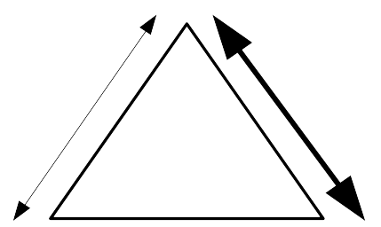

Conducerea altora într-o conversație cu Dumnezeu
Când suntem răniți sau purtăm poveri din trecutul nostru cu noi, acest lucru afectează relația noastră cu Dumnezeu. Adesea nu suntem conștienți de legătura dintre aceste lucruri - simțim doar că suntem uneori blocați, că gândurile noastre sunt adesea negative sau cădem din nou și din nou în același păcat. Pentru a ajunge la rădăcina problemei noastre, este foarte util să avem sprijin de la cineva cu experiența potrivită și cu o perspectivă clară „exterioară”. Ele ne pot conduce astfel încât să-i punem lui Dumnezeu întrebările corecte și să luăm măsurile necesare pentru a deveni liberi.
Când noi înșine ne-am curățat viața și am experimentat libertatea cu ajutorul altcuiva, un pas următor este să învățăm cum să îi conducem pe ceilalți într-o conversație cu Dumnezeu, astfel încât și noi să îi putem ajuta pe ceilalți să devină liberi!
Dumnezeu vrea să vindece și să elibereze oamenii. Ca ajutor, este responsabilitatea noastră să conducem cealaltă persoană la o întâlnire cu Dumnezeu, astfel încât acest lucru să devină posibil. Duhul Sfânt are rolul principal - parteneriem cu El urmându-i călăuzirea. Asta înseamnă că ascultăm de Duhul Sfânt și îl ajutăm pe celălalt să comunice cât mai bine cu El. Facem acest lucru sugerând întrebări pe care le-ar putea pune lui Dumnezeu. De asemenea, îi sprijinim în următoarele două domenii:
| Dumnezeu | ||
|  | ||
| Tu (ajutor) | Altă persoană | |
Scopul principal al fiecărui timp de rugăciune este de a întări relația dintre cealaltă persoană și Dumnezeu. De aceea este afișat ca fiind cel mai puternic din diagramă. Întotdeauna avem încredere că Dumnezeu vrea să vorbească cu ei și presupunem că ei pot auzi vocea lui Dumnezeu. Împreună cu El îi conducem în identificarea obstacolelor și înlăturarea lor.
Pentru aceasta este necesar ca propria noastră relație cu Dumnezeu să fie corectă și ca noi, ca ajutor, să fim în permanență în legătură cu Dumnezeu pe tot parcursul timpului de rugăciune. În acest fel, putem lucra împreună cu Dumnezeu cât mai aproape posibil și să-l conducem pe celălalt în libertate.
Este important în relația noastră cu persoana pe care o ajutăm să aibă încredere în noi și să ne lase să îi conducem. Dar această relație nu ar trebui să fie obiectivul nostru principal într-un timp de rugăciune. Aceasta înseamnă că, în timpul nostru de rugăciune împreună, vorbim mai puțin între noi. Mai degrabă îi lăsăm să vorbească cu Dumnezeu despre aceste probleme și îi lăsăm să îi adreseze lui Dumnezeu întrebările corecte. El cunoaște rădăcinile și este cel care vindecă și dă libertate.
Cu cât încă mai ești legat de tine , cu atât îi poți conduce pe ceilalți în libertate. Următoarele sunt necesare pentru asumarea acestei responsabilități:
Examinează-te în conformitate cu aceste trei criterii și vorbește cu Dumnezeu: Cât de pregătit ești pentru acest rol?
Discutați cu mentorul / antrenorul dvs. și cu un ajutor cu experiență: cereți-le părerea și dacă vă văd gata să învețe rolul ajutorului!
Cealaltă persoană este prețioasă și valoroasă în ochii lui Dumnezeu. Așa vrem să ne ocupăm de ei!
Ca în toate lucrurile, Isus este modelul nostru. El și-a instruit discipolii făcând mai întâi El însuși și lăsându-i să observe. Apoi i-a lăsat să încerce în timp ce El stătea aproape. Mai târziu, El nu a mai fost alături de ei, ci a fost evaluat cu ei după aceea. În cele din urmă, El i-a trimis să o facă singuri.
Primul pas este întotdeauna să ai un timp de rugăciune pentru tine în care să lași pe altcineva să te ghideze. Apoi, căutați un ajutor cu experiență care să vă poată antrena. Un bun pas următor este să observi mai multe timpuri de rugăciune ca stagiar. După aceea, puteți prelua rolul de co-lider și, în cele din urmă, veți putea conduce un timp de rugăciune. Puteți cere antrenorului dvs. să fie co-lider, astfel încât să vă poată oferi feedback.
Întrebați-l pe Dumnezeu: Ce probleme mai am în domeniul vindecării interioare?
Conducerea oamenilor spre libertate și vindecare se bazează pe mai multe principii și procese de bază. Acestea sunt împărțite în bucăți și explicate în fișele de lucru: „ Iertarea pas cu pas”, „ Mărturisirea păcatelor și căința”, „A depăşi teama şi mânia ” etc. Este important să învățați fiecare piesă până când nu vă simțiți bine cu ea și apoi puteți practica legarea lor. Cât de experimentat ești cu aceste principii individuale în propria ta viață și cu ceilalți?
Citiți paragrafele „Principii pentru timpul de rugăciune” și „Onorarea celeilalte persoane”.
Care dintre puncte sunt deosebit de provocatoare pentru tine? Întrebați-l pe instructor pentru perspectiva lui și vorbiți împreună: Cum puteți crește în aceste domenii?
Așezați-vă cu antrenorul și dezvoltați un plan de antrenament pentru dvs.!